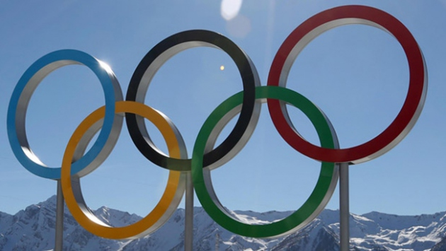

Olimpiyatlar

OLİMPİYAT AMBLEMİ VE ANLAMI
Sporun birleştirici ve barışcı etkisini kullanmayı düstur edinmiştir. beş kıtayı temsil eden beş halkanın içiçe geçtiği bir beyaz bayrağı vardır.
Kırmızı halka amerika'dır, sarı halka asyadır, yeşil halka avustralya'yı, siyah halka afrikayı, mavi halka da avrupayı temsil eder.
Olimpiyat oyunları, veya kısaca Olimpiyatlar, dört yılda bir yapılan geniş kapsamlı bir spor organizasyonudur. Antik şekli eski yunan'da yapılan oyunlar Fransız soylusu Pierre de Fredy,Baron de Coubertin tarafından 19.yy.'ın sonlarında modernize edilmiştir.
Olimpiyat Oyunları'nın yaz sporlarını içeren ve daha iyi bilineni olan Yaz Olimpiyatları, 1896'dan beri Dünya savaşları istisnaları hariç her dört yılda bir yapılagelmiştir. Kış Oyunları ise 1924'te yapılmaya başlanmıştır ve 1994'ten beri Yaz Oyunlarının yapıldığı yıllardan iki sene sonra yapılmaktadır.Antik (Klasik) Olimpiyatlar Antik Olimpiyatlar: tarihi tam olarak bilinmemekle birlikte hakkında pek çok söylenti vardır. Olimpiyatların tarihinin M.Ö.14.yy.a kadar uzandığı tahmin edilmektedir. Oyunların Yunanistan'ın Olympia yöresinde başladığı tahmin edilmektedir. M.Ö.776 yılından itibaren ise oyunların tarihi kesin olarak tutulmaya başlanmıştır.
Olimpiyatların Düzenlendiği Ülkeler
2016 Rio Olimpiyatları
2016 Yaz Olimpiyatları (XXXI. Olimpiyat Oyunları), 5-21 Ağustos 2016 tarihleri arasında Brezilya'nın en büyük ikinci kenti olan Rio de Janeiro'da düzenlendi.
2012 Londra Olimpiyatları
2012 Yaz Olimpiyatları'nda, Türkiye adına 16 dalda 114 sporcuyla yarıştı. Aynı zamanda Türkiye, bu oyunlara tarihindeki en yüksek kadın ve toplam sporcu sayısına ulaştı.
2008 Pekin Olimpiyatları
2008 Yaz Olimpiyatları, 8-24 Ağustos 2008 tarihleri arasında Çin Halk Cumhuriyeti'nde düzenlenlenmiştir.
Düzenlenen En Eski Olimpiyat Oyunu
1896 Atina Olimpiyatları
6-15 Nisan 1896 tarihleri arasında Yunanistan'ın başkenti Atina'da ilk modern olimpiyatlar gerçekleştirildi. bu oyunlara, 14 ülkeden 245 sporcu katıldı. Bu oyunlarda bayan sporcular yoktu ve Yunanistan kralı 1.Georges açtı.